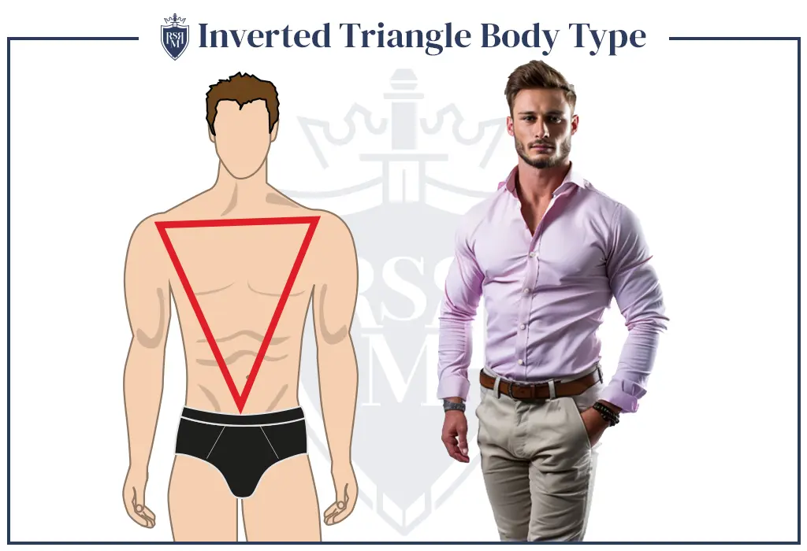

Your well-developed chest and shoulders are significantly broader in comparison to your waist and hips. You probably spend hours at the gym every week working up an enviable muscle pump. Hectic training sessions in the gym result in accentuated shoulders and thighs and a narrow waist.With a V-shaped torso, it is very important to pay attention to the imbalance between the upper and lower parts of the body.
